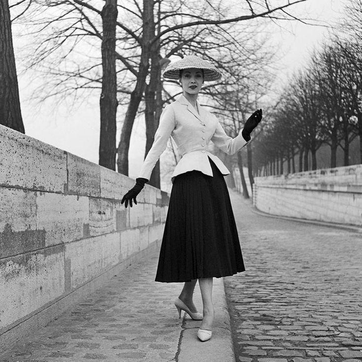

UNA REVOLUCIÓN EN LA MODA
THE NEW LOOK

LA SILUETA QUE CAMBIÓ TODO
En 1947, Christian Dior presentó el famoso New Look, una propuesta que transformó la moda de la época. Se caracterizaba por cinturas definidas, hombros suaves y faldas amplias que creaban una silueta elegante y sofisticada.
¿POR QUÉ FUE TAN IMPORTANTE?
El New Look marcó un antes y un después en la historia de la moda. Representó una nueva etapa de creatividad y elegancia, convirtiéndose en una de las propuestas más reconocidas de Christian Dior.